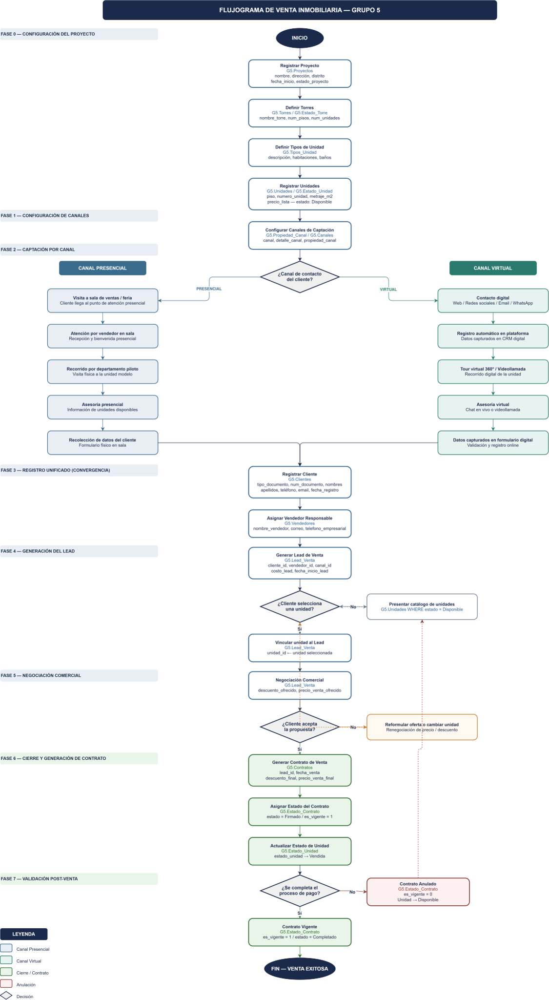

Aplicaciones operativas y agentes para el flujo comercial
Esta sección documenta la capa de aplicación del proyecto con base en el flujo real de venta inmobiliaria. Se presenta el proceso funcional, tres aplicaciones que acompañan el registro y gestión del lead, y un conjunto de agentes mockup diseñados para apoyar la calificación, recomendación y asignación comercial.
clientes simulados
leads activos
unidades disponibles
leads asignados
prototipo web funcional
Vista general del flujo comercial
El siguiente diagrama resume el recorrido operativo del proceso comercial inmobiliario, desde la configuración inicial del proyecto y los canales de captación hasta el registro del cliente, la generación del lead, la negociación y el cierre del contrato.

Vista general del flujo comercial del proyecto, utilizada como referencia para estructurar las aplicaciones operativas y los agentes propuestos.
Fase 0 · Configuración inicial
Comprende el registro de proyecto, torres, tipos de unidad, unidades y estados base para dejar listo el portafolio inmobiliario.
Fase 1 · Configuración de canales
Define la estructura de captación comercial, distinguiendo entre canales propios y externos, y entre atención presencial y virtual.
Fase 2 · Captación por canal
El cliente ingresa por un canal presencial o virtual. Ambos recorridos alimentan el mismo proceso comercial de registro y seguimiento.
Fase 3 a Fase 7 · Lead, negociación y cierre
Se registra el cliente, se asigna el vendedor, se genera el lead, se valida la unidad, se negocia el precio y se formaliza el contrato final.
Aplicaciones operativas del flujo comercial
A partir del flujograma se estructuraron tres aplicaciones clave: registro del cliente, selección del departamento y asignación comercial. Cada aplicación se vincula conceptualmente con las tablas del modelo G5 implementado en SQL, Warehouse y Power BI.
Registro del Cliente
Relaciona G5.Clientes, G5.Canales y G5.Lead_Venta. Su objetivo es capturar los datos del interesado y crear el lead inicial.
Selección de Departamento
Relaciona G5.Proyectos, G5.Torres, G5.Unidades, G5.Tipos_Unidad y G5.Estado_Unidad. Permite vincular la unidad al lead.
Asignación Comercial
Relaciona G5.Vendedores y G5.Lead_Venta. Permite asignar el asesor responsable y dejar trazabilidad de la gestión inicial.
Agentes funcionales propuestos
Se implementaron mockups funcionales de agentes sobre reglas simples en JavaScript para representar cómo podría operar una capa inteligente de soporte comercial. La lógica está preparada para evolucionar luego a servicios más avanzados conectados a APIs o modelos externos.
Calificador de Leads
Evalúa probabilidad y prioridad del lead según canal, urgencia, presupuesto e interés por unidad.
Recomendador de Unidades
Sugiere la unidad más conveniente según presupuesto, habitaciones, distrito y preferencia del cliente.
Asignador de Asesor
Selecciona el asesor más conveniente según prioridad, proyecto de interés y carga comercial simulada.
Agente futuro · Seguimiento
Podría programar recordatorios, secuencias de contacto y alertas de inactividad por lead o vendedor.
Agente futuro · Negociación
Podría sugerir bandas de descuento y contraofertas según proyecto, margen y comportamiento histórico.
Agente futuro · Alertas de cierre
Podría anticipar riesgo de caída del contrato y advertir si una unidad debe volver a disponible.
Bandeja de leads asignados
Vista consolidada de leads generados, su unidad vinculada y el asesor comercial responsable.
| Lead | Cliente | Canal | Proyecto | Unidad | Asesor | Prioridad | Estado |
|---|
Prompt sugerido para continuar en Cursor
Si deseas evolucionar estos agentes a una versión más completa, el repositorio incluye un prompt base para Cursor en el archivo CURSOR_PROMPT_AGENTES.md. Ese prompt solicita mejorar la UI, mantener el estilo de la web, conectar endpoints reales y añadir componentes visuales para cada aplicación y agente.